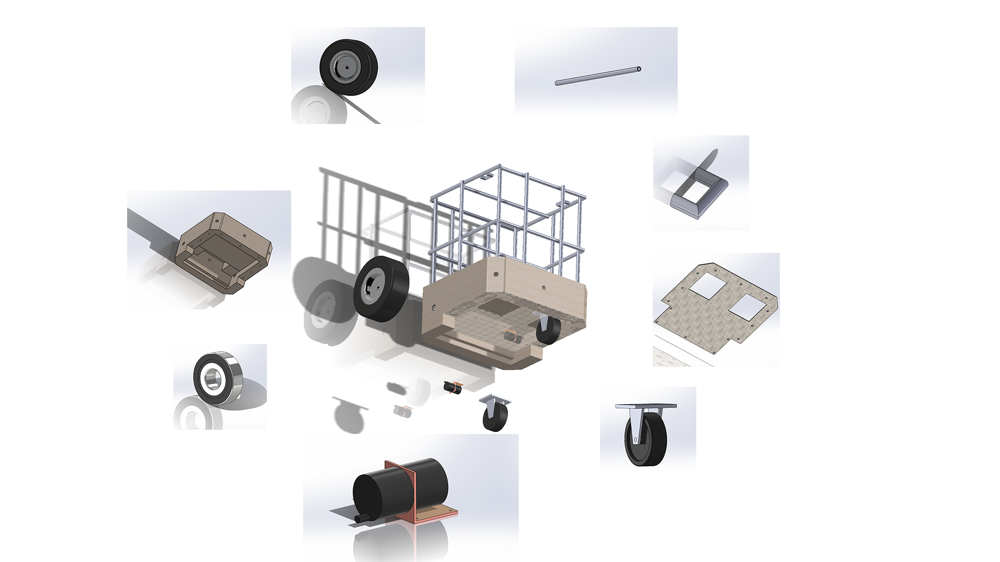
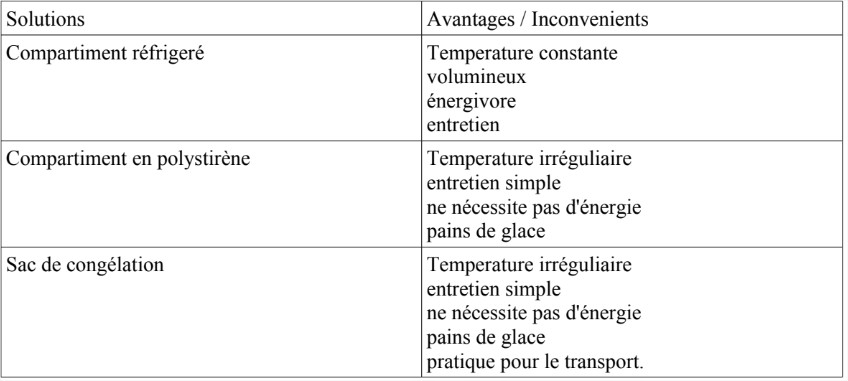
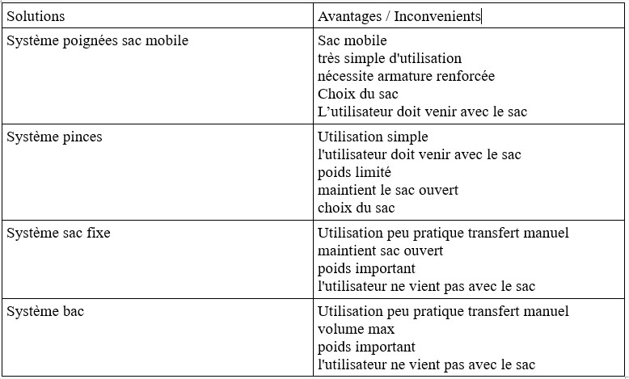

Bonjour, nous sommes élèves en terminale S-SI du lycée St Marie. Nous travaillons sur un projet technique dans le cadre du baccalauréat, notre objectif est de concevoir un appareil permettant d'aider les personnes à mobilité réduite lors des courses. Voici un questionnaire qui a pour but de cerner d'un point de vue statistique le phénomène courses.
Merci de votre aide.
Questions
Merci de bien vouloir cocher la proposition correspondant à votre réponse en fonction de vos dernières courses.
Proportion de produits frais dans vos courses :
Aucune
.1/4
.1/3
.1/2
.2/3
Que des produits frais
Proportion de produits vrac dans vos courses :
Aucune
1/4
1/3
1/2
2/3
.Que des produits frais
Durée passée à faire vos courses : . 15 min /. 30 min / 45 min / 1 h
Masse de vos courses(environ) : . 1 kg / 2 kg / 5 kg / 10 kg
Faites vous vos courses seul(e) ? Oui / .Non
Seriez vous intéressés par une offre vrac plus large : ? Oui / .Non
Seriez vous intéressées par une implantation en centre ville ? Non / Oui
Seriez vous intéressés par :
des animations supplémentaires ? / des cours de cuisine ?
La mise en place d'une carte fidélité
Quel est le principal problème que vous rencontrez durant vos courses ?
Avez vous de commentaires ou suggestions ?
Nous vous remercions d’avoir eu la gentillesse de répondre à notre questionnaire.
Calculons le couple moteur nécessaire pour faire avancer le caddie.
Définissons :
-Vitesse du Caddie (Vcad) = 6km/h
-Rapport de réduction ( r) =1/24
-Masse du robot (M) =40kg
-Rayon de la roue (R) =125 mm
-Vitesse angulaire roue ( wroue)
-Vitesse angulaire moteur (wmot)
-Force de poussée du caddie (Fp)
-Force gravitationnelle (g)
-Puissance du moteur (P)
-Couple moteur (C)
1°
Vcad=wroue x R
1,66=wroue x 0,125
wroue= 13,3 rad/s
wmot= wroue/r
wmot= 13,3 x 24
wmot= 319 rad/s
2°
Fp= M x g
Fp= 40 x 9,81
Fp= 392,4 N
3°
P=F x V
P=C x w
P=Fp x Vcad
P=392,4 x 1,6
P= 627,9 W
P=C x wmot
C= P/w mot
C= 627,9/ 319
C= 1,97 Nm
or il y a deux moteurs donc
Cmot= 985 mNm
Ainsi nous choisirons deux moteurs avec un couple de 1 Nm





Cependant celle-ci ne pouvait pas imprimer le bâti car trop volumineux, j'ai donc choisi de le faire à l'échelle 1/3.
Cela étant, j'ai rencontré plusieurs difficultés:
- les moteurs
- les roulettes / roues
- l'adaptation à l'éhelle
Lors de la fabrication nous avons rencontré d'autres problèmes:
- la piece intermediaire entre l'axe du moteur et la roue
- la hauteur de la roulette